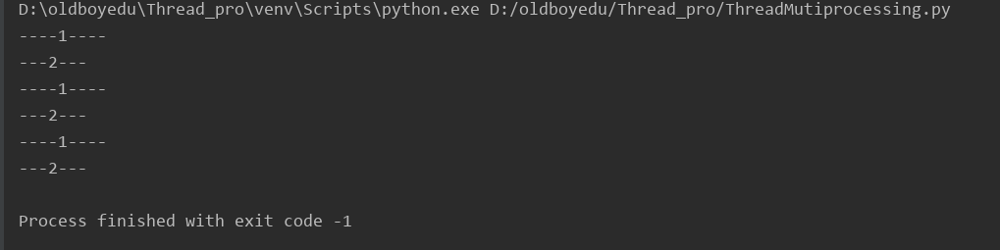
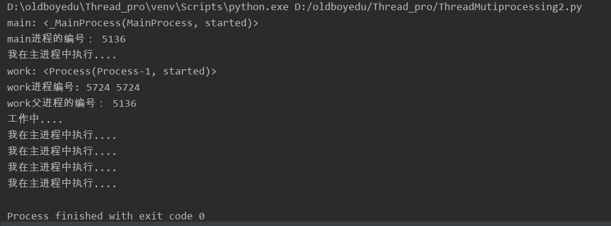
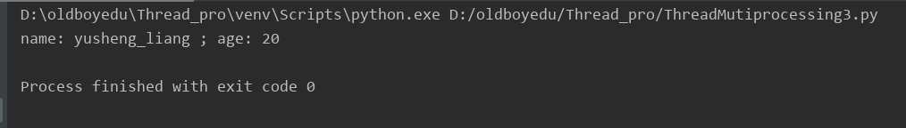
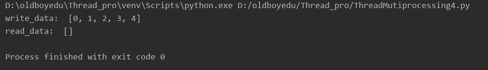
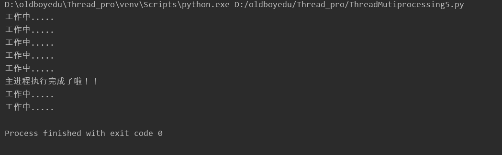
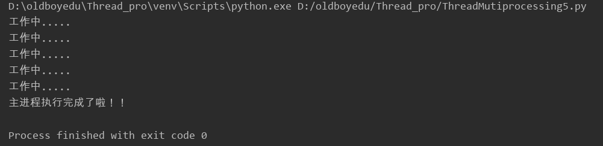

进程:通俗理解一个运行的程序或者软件,进程是操作系统资源分配的基本单位
1.1、导入进程模块
import multiprocessing
1.2、Process进程类的语法结构如下：
Process([group[, target[, name[,args[,kwargs]]]]])
group: --指定进程组，目前只能使用None
target: --执行的目标任务名
name: --进程名字
args: --以元组方式给执行任务传参
kwargs: --以字典方式给执行任务传参
Process创建 的实例对象的常用方法：
start(), 启动子进程实例（创建子进程）
join(timeout), 是否等待子进程执行结束，或等待多少秒
terminate(), 不管任务是否完成，立即终止进程
Process创建的实例对象的常用属性：
name 当前进程的别名，默认为Process-N,N为从1开始递增的整数。
pid 当前进程的pid（进程号）
一、多进程完成多任务代码
1 #!/usr/bin/env python
2 # -*- coding:utf-8 -*-
3 """
4 python进程
5 """
6 import multiprocessing
7 import time
8
9 def run_proc():
10 """
11 子进程要执行的代码
12 :return:
13 """
14 while True:
15 print("---2---")
16 time.sleep(1)
17
18 if __name__ == "__main__":
19 #创建子进程
20 sub_process = multiprocessing.Process(target=run_proc)
21 #启动子进程
22 sub_process.start()
23 while True:
24 print("----1----")
25 time.sleep(1)代码执行结果：

二、获取进程pid
1 #!/usr/bin/env python
2 # -*- coding:utf-8 -*-
3 """
4 获取进程pid
5 """
6
7 import multiprocessing
8 import time
9 import os
10
11 def work():
12 #查看当前进程
13 current_process = multiprocessing.current_process()
14 print("work:", current_process)
15 #获取当前进程的编号
16 print("work进程编号:", current_process.pid, os.getpid())
17 #获取父进程的编号
18 print("work父进程的编号：", os.getppid())
19 for i in range(10):
20 print("工作中....")
21 time.sleep(0.2)
22 #扩展，根据进程编号杀死对应的进程
23 os.kill(os.getpid(), 9)
24
25 if __name__ == "__main__":
26 #查看当前进程
27 current_process = multiprocessing.current_process()
28 print("main:", current_process)
29 #获取当前里程的编号
30 print("main进程的编号：", current_process.pid)
31
32 #创建子进程
33 sub_process = multiprocessing.Process(target=work)
34 #启动进程
35 sub_process.start()
36
37 #主进程执行打印信息操作
38 for i in range(5):
39 print("我在主进程中执行....")
40 time.sleep(0.2)代码执行结果：

三、进程的基本状态及状态之间的关系
1 #!/usr/bin/env python
2 # -*- coding:utf-8 -*-
3 """
4 给子进程指定的函数传递参数
5 """
6
7 import multiprocessing
8
9 #定义一个用于显示信息的方法
10 def show_info(name, age):
11 print("name:", name, "; age:", age)
12
13 if __name__ == "__main__":
14 sub_process = multiprocessing.Process(target=show_info, args=("yusheng_liang", 20))
15 #启动进程
16 sub_process.start()代码执行结果：

四、进程之间不共享全局变量
注意:创建子进程其实是对主进程进行拷贝，进程之间相互独立，访问的全局变量不是同一个，所以进程之间不共享全局变量
#!/usr/bin/env python
# -*- coding:utf-8 -*-
"""
进程之间不共享全局变量
"""
import multiprocessing
import time
#定义全局变量
my_list = list()
#定义写入数据的方法
def write_data():
for i in range(5):
my_list.append(i)
time.sleep(0.2)
print("write_data: ", my_list)
#定义读取数据的方法
def read_data():
print("read_data: ", my_list)
if __name__ == "__main__":
#创建写入数据的进程
write_process = multiprocessing.Process(target=write_data)
#创建读取数据的进程
read_process = multiprocessing.Process(target=read_data)
write_process.start()
#主进程等待写入进程执行完成以后代码，再继续往下执行
write_process.join()
read_process.start()代码执行结果：

五、主进程会等待所有的子进程执行完成程序再退出
1 #!/usr/bin/env python
2 # -*- coding:utf-8 -*-
3 """
4 主进程会等待所有的子进程执行完成程序再退出
5 """
6 import multiprocessing
7 import time
8
9 #测试子进程是否执行完成以后主进程才能退出
10 def work():
11 for i in range(7):
12 print("工作中.....")
13 time.sleep(0.2)
14
15 if __name__ == "__main__":
16 #创建子进程
17 work_process = multiprocessing.Process(target=work)
18 work_process.start()
19
20 #让主进程等待1秒钟
21 time.sleep(1)
22 print("主进程执行完成了啦！！")
23
代码执行结果：

六、销毁子进程的代码
1 #!/usr/bin/env python
2 # -*- coding:utf-8 -*-
3 """
4 主进程会等待所有的子进程执行完成程序再退出
5 """
6 import multiprocessing
7 import time
8
9 #测试子进程是否执行完成以后主进程才能退出
10 def work():
11 for i in range(7):
12 print("工作中.....")
13 time.sleep(0.2)
14
15 if __name__ == "__main__":
16 #创建子进程
17 work_process = multiprocessing.Process(target=work)
18 work_process.start()
19
20 #让主进程等待1秒钟
21 time.sleep(1)
22 print("主进程执行完成了啦！！")
23
24 #让子进程直接销毁，表示终止执行，主进程退出之前，把所有的子进程直接销毁就可以了
25 work_process.terminate()
代码执行的结果：

六、进程池
1、当需要创建的子进程数量不多时，可以直接利用multiprocessing中的Process动态成生多个进程，但如果是上百甚至上千个目标，手动的去创建进程的工作量巨大，此时就可以用到multiprocessing模块提供的Pool方法。
2、初始化Pool时，可以指定一个最大进程数，当有新的请求提交到Pool中时，如果池还没有满，那么就会创建一个新的进程用来执行该请求；但如果池中的进程数已经达到指定的最大值，那么该请求就会等待，直到池中有进程结束，才会用之前的进程来执行新的任务。
实例一：进程池同步执行任务
进程池同步执行任务表示进程池中的进程在执行任务的时候一个执行完成另外一个才能执行，如果没有执行完会等待上一个进程执行。
1 #!/usr/bin/env python
2 # -*- coding:utf-8 -*-
3 """
4 进程池同步实例代码
5 """
6 import multiprocessing
7 import time
8
9 #复制任务
10 def work():
11 print("复制中...", multiprocessing.current_process().pid)
12 time.sleep(0.5)
13
14 if __name__ == "__main__":
15 #创建进程池
16 #3:进程池中进程的最大个数
17 pool = multiprocessing.Pool(3)
18 #模拟大批量的任务，让进程池去执行
19 for i in range(5):
20 #循环让进程池执行对应的work任务
21 #同步执行任务，一个任务执行完成以后另外一个任务才能执行
22 pool.apply(work)
实例二：进程池异步执行任务
进程池异步执行任务表示进程池中的进程同时执行任务，进程之间不会等待
1 #!/usr/bin/env python
2 # -*- coding:utf-8 -*-
3 """
4 进程池异步执行任务
5 进程池会根据任务执行情况自动创建进程，而且尽量少创建进程，合理利用进程池中的进程完成多任务
6 """
7 import multiprocessing
8 import time
9
10 #复制任务
11 def work():
12 print("复制中...", multiprocessing.current_process().pid)
13 # 获取当前进程的守护状态
14 # 提示：使用进程池创建的进程是守护主进程的状态，默认自己通过Process创建的进程是不是守住主进程的状态
15 # print(multiprocessing.current_process().daemon)
16 time.sleep(0.5)
17
18 if __name__ == "__main__":
19 #创建进程池
20 pool = multiprocessing.Pool(3)
21 #模拟大批量的任务，让进程池去执行
22 for i in range(5):
23 # 循环让进程池执行对应的work任务
24 # 同步执行任务，一个任务执行完成以后另外一个任务才能执行
25 # pool.apply(work)
26 # 异步执行，任务执行不会等待，多个任务一起执行
27 pool.apply_async(work)
28 # 关闭进程池，意思告诉主进程以后不会有新的任务添加进来
29 pool.close()
30 # 主进程等待进程池执行完成以后程序再退出
31 pool.join()